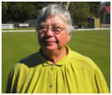
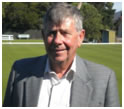

|
|
Robyn Wallace
(President)
Working Career: Senior Lecturer, Acting Head of Department - University of Newcastle. Faculty representative on Senate Board of Environment Studies.
Council Alderman, Vice Chairman Planning, Chair NSW Advisory Council ABC, Chair Walka Trust.
Croquet Achievements:
2002 President Maitland Croquet Club
Senior Vice President – Croquet NSW
State Co-ordinator of Golf Croquet,
State Handicapper for Golf Croquet
2009 to 2011 President Croquet NSW.
2007 Selected in the first state Golf Croquet Team for Interstate Cup.
Marital Status: Married with two daughters and four grandchildren.
|
 |
Neil White
(Senior Vice-President)
Neil is a member of Brighton club in South Australia.
He commenced playing croquet at South Terrace club in late 1990's and filled the roles of Secretary and President. Whilst at South Terrace he took on the task of organising inter-club Golf Croquet competitions in South Australia and chaired the initial Golf Croquet committee for SACA. With changes in residences Neil moved to Holdfast Bay club and later to Brighton.
Neil captained SA's initial interstate Golf croquet team which competed in Newcastle.
Neil has held the position of President of SACA for the past two years a position that he is relinquishing to take up the VP role on ACA. He has concentrated on golf croquet in the past few years but has decided to try his hand at Association Croquet again this year. Neil chairs (jointly with Max Murray) the Organising Committee for the 2012 World's Event in Adelaide.
Neil's main interest outside croquet (is there anything outside croquet??) is travel and he and wife Heather travel as frequently as possible.
|
 |
JIM CLEMENT
(Treasurer)
Jim started in croquet in 2005, when he was a foundation member of the Sarsfield Croquet Club, elected as the inaugural Secretary and Public Officer and appointed as the club’s delegate to the Gippsland Croquet Association, positions he retains today. He accredited as a Golf Croquet referee the following year and has since officiated at club, regional, state, national and international events. He has a deep interest in GC Rules and contributes articles on the rules to magazines and newsletters. Jim was elected Secretary of Croquet Victoria in June 2010 and re-elected in June 2012 for another two year term. He commenced to understudy the ACA Treasurer in 2009, was appointed as ACA Assistant Treasurer in 2010 when that position was established and retained the position, with a short hiatus, until elected Honorary Treasurer in March 2013. In his community Jim is Secretary/Treasurer of both the Bairnsdale Junior Cricket Association and of the local Sarsfield Recreation Reserve Committee of Management. Jim & his wife, Sandy, live on a five acre block in rural Sarsfield, near Bairnsdale Vic, which is in a mobile phone black hole (and a digital TV grey hole); their two sons and three grandchildren live in Tasmania. When not administering, refereeing or playing croquet, he is busy looking after his orchard and vegetable garden on the block he and Sandy share with two Boxer pups, an Angora goat and chickens.
|
|
|
|
|